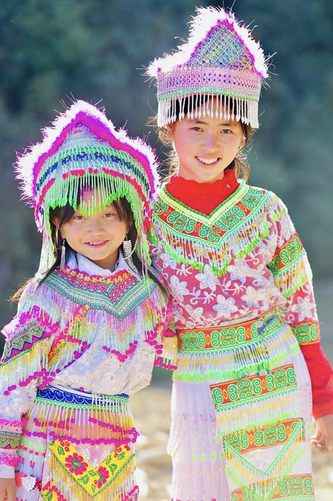
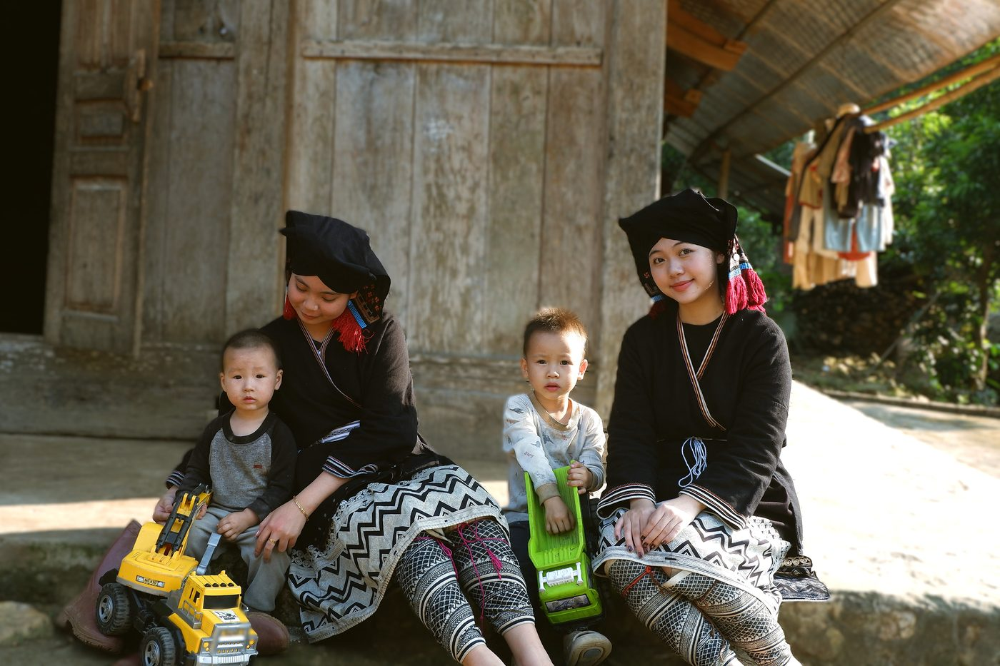
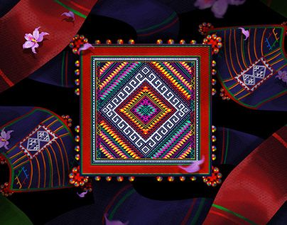
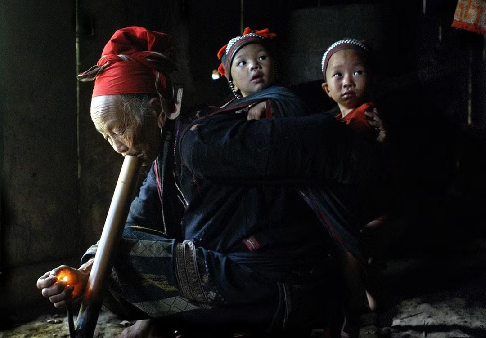

Mỗi trang phục – một câu chuyện
Những câu chuyện đi cùng bộ trang phục đầu năm
Mỗi dịp đầu năm, những bộ trang phục truyền thống lại theo chân trẻ nhỏ xuống phố, đến chợ phiên và hòa vào không khí ngày hội. Với các em nhỏ, đó là bộ quần áo đẹp rực rỡ nhất để đi chơi cùng bạn bè; với những người bà, người mẹ, mỗi màu vải, đường thêu, họa tiết trên trang phục còn là thành quả của đôi tay khéo léo và những năm tháng cần mẫn thêu đan. Qua từng bộ trang phục của người Mông, Dao Tiền, Thái, Dao Đỏ, Lô Lô…, những câu chuyện về gia đình, bản làng và văn hóa dân tộc vẫn được tiếp nối từ thế hệ này sang thế hệ khác.
Ở mỗi bản làng, những ngày đầu năm thường có thêm nhiều sắc màu. Màu chàm sẫm của vải, sắc đỏ, vàng, xanh nằm trên những đường thêu, những hoa văn nhỏ được người phụ nữ kiên nhẫn gửi vào từng tấm áo. Có những họa tiết đã theo mẹ, theo bà qua bao mùa Tết; có những bộ trang phục được cất kỹ lưỡng, chỉ chờ đến ngày hội để được diện chúng. Với trẻ nhỏ, đó đôi khi chỉ là bộ váy áo đẹp nhất để diện đi chơi cùng bạn bè. Nhưng trên từng nếp vải, từng đường kim mũi chỉ, là ký ức về một bản làng, một nếp sống và những giá trị văn hóa được truyền từ thế hệ này sang thế hệ khác.
01 Mông
Những ngày đầu năm, các bản Mông rộn ràng hơn bởi những cuộc gặp gỡ, vui chơi cùng các họat động ngày hội. Trong sắc Xuân ấy, những bộ váy áo nhiều màu cũng theo chân người lớn và trẻ nhỏ đi hội. Ở Hua Tạt, trẻ em cùng người lớn tham gia những trò chơi truyền thống như đánh quay, tù lu, ném còn, đẩy gậy, kéo co…

Với em, được diện những bộ trang phục đẹp gắn với một ngày rất vui. Hôm nay có hội, có bạn bè và những trò chơi chỉ ngày Tết mới có.
Nhìn gần, trang phục Mông có nhiều chi tiết: màu vải, đường thêu, họa tiết và những món đồ đi kèm. Mỗi chi tiết góp phần tạo nên vẻ riêng của trang phục và cũng cho thấy sự khéo léo của người làm ra nó.
Đến ngày hội, những bộ quần áo đẹp cũng theo các em ra sân chơi. Tà váy chuyển động theo từng bước chạy, những đứa trẻ gọi nhau rồi kéo nhau đi. Với các em, đó có lẽ là lúc bộ quần áo trở thành một phần của ngày Tết.
02 Dao Tiền
Đôi tay bà làm nên bộ quần áo cho em

Với người Dao Tiền ở Bắc Kạn, việc làm trang phục gắn với nhiều công đoạn như nhuộm vải, thêu hoa, trang trí bằng sáp ong và may các bộ phận của trang phục.
Trang phục của phụ nữ Dao Tiền thường có màu chàm đen, kết hợp các đường chỉ màu xanh, trắng. Bộ trang phục gồm áo, yếm, váy, khăn đội đầu, thắt lưng và một số đồ trang sức. Những hoa văn trên vải được tạo nên bằng kỹ thuật thêu và vẽ sáp ong.
Việc may, thêu cũng được truyền từ những người lớn trong gia đình cho các bé gái. Ban đầu, người phụ nữ dạy con của họ những đường may đơn giản, sau đó mới đến những họa tiết cầu kỳ hơn.
03 Thái
Chiếc khăn mẹ dạy em thêu

Trong trang phục truyền thống của phụ nữ Thái, chiếc khăn Piêu là một trong những vật dụng quen thuộc và có vị trí đặc biệt. Khăn thường được làm từ vải bông, nhuộm chàm, hai đầu khăn được thêu bằng nhiều màu chỉ. Các họa tiết trên khăn được tạo nên từ những đường kim nhỏ, đòi hỏi sự khéo léo và kiên trì của người làm.
Với nhiều phụ nữ Thái, việc thêu khăn bắt đầu từ khi còn nhỏ. Các bé gái được bà, được mẹ hướng dẫn từ những đường thêu đơn giản, cách chọn màu chỉ đến cách tạo hình các họa tiết. Để hoàn thành một chiếc khăn đẹp, người thêu phải dành nhiều thời gian và thực hiện cẩn thận từng chi tiết.
Vì vậy, chiếc khăn Piêu không chỉ là một phụ kiện của trang phục. Qua việc học thêu, các bé gái cũng học được cách làm một món đồ gắn với đời sống của cộng đồng mình. Những kỹ năng ấy được truyền từ mẹ sang con, từ bà sang cháu và tiếp tục được duy trì trong gia đình dân tộc Thái.
Trong những dịp lễ, Tết, hội bản, phụ nữ và trẻ em Thái mặc trang phục truyền thống. Chiếc khăn Piêu khi đó trở thành một phần của bộ trang phục ngày hội, đi cùng áo, váy và những món đồ trang sức.
04 Dao Đỏ
Sắc đỏ trên áo và đôi tay của mẹ

Nhìn từ xa, trang phục phụ nữ Dao Đỏ dễ nhận ra bởi màu đỏ nổi bật trên nền vải chàm. Đỏ xuất hiện ở chỉ thêu, những chùm bông len, viền áo và nhiều chi tiết trang trí. Với người Dao Đỏ, màu đỏ không chỉ tạo nên vẻ rực rỡ cho bộ trang phục mà còn gắn với quan niệm về hạnh phúc, may mắn và những điều tốt lành.
Một bộ trang phục phụ nữ Dao Đỏ gồm áo dài, quần, áo yếm, khăn đội đầu, thắt lưng và các đồ trang sức đi kèm. Trên nền vải chàm, những họa tiết được thêu bằng nhiều màu chỉ như đỏ, vàng, trắng, xanh. Có những bộ trang phục phải mất nhiều tháng, thậm chí khoảng một năm mới hoàn thành, bởi từng bộ phận đều được cắt, thêu rồi ghép lại một cách cẩn thận.
Nhưng để một cô gái có thể tự làm bộ trang phục của mình, việc học phải bắt đầu từ rất sớm. Sau những giờ làm việc, các bà, các mẹ, các chị hướng dẫn con gái cách chọn vải, cắt vải và thêu từng hoa văn. Những đường kim đầu tiên còn vụng về, nhưng qua thời gian, cô gái sẽ dần làm được những chi tiết phức tạp hơn cho bộ trang phục của mình.
Với người Dao Đỏ ở Nguyên Bình, việc biết may thêu còn gắn với một dấu mốc quan trọng trong cuộc đời người phụ nữ. Theo phong tục truyền thống, trước khi đi làm dâu, các cô gái phải học may thêu và tự chuẩn bị trang phục cưới cho mình. Có những bộ trang phục còn được chuẩn bị cho gia đình nhà chồng.
Vì thế, bộ quần áo một cô gái mặc trong ngày Tết không chỉ là bộ đồ đẹp được lấy ra từ tủ. Trong đó có công sức của mẹ, sự chỉ dẫn của bà và những năm tháng người con gái học cách làm trang phục của dân tộc mình.